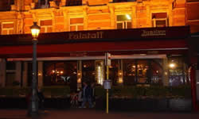
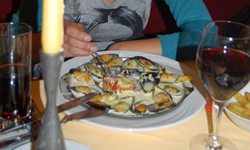
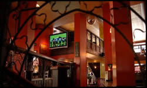
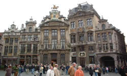

Student Volunteers: An opportunity for socializing, personal development, and organizing
As the AOSD community continues to grow and mature, there is a great opportunity for young students to get involved and on track to become AOSD's leaders of tomorrow. Contributing as a student volunteer is where many of these leaders start. In 2008, the student volunteer opportunity has become even more attractive, featuring an active social calendar and a mentoring matchup. We expect this year's class of volunteers to be our strongest yet, and we plan to provide events that further develop their leadership skills, social network, and level of experience, grooming them into AOSD's future leaders.   
Details
| Important Dates | ||
|---|---|---|
| Submissions Due : | February 1st, 2008 | |
| Notifications: | February 15th, 2008 | |
What you get
- Free student registration for the conference.
- One free banquet ticket.
- Organized socials: we plan the trip/outing/restaurant, you just show and enjoy.
- Mentor matchup: we'll match you up for at least one meal with a more senior AOSD researcher.
- Excellent networking opportunities: when on duty, supervising a room or being at the desk provides natural networking opportunities. Practice your elevator talk!
- When on duty: a high chance to be assigned to the tutorials, workshops, demonstrations or other events of interest to you.
- When not on duty: free admission to all events of interest to you, if space is available.
What you provide
- 15–20 hours of work in total
- Technical assistance for the main conference sessions, workshops, tutorials, demonstrations, spring school, student extravaganza or evening events.
- Help at the registration desk.
- Help in arranging, rearranging and disassembling conference facilities.
- Technical assistance to speakers and conference participants.
Qualifications
- Enrollment as a full-time student during the 2007-2008 academic year
- Willingness to be friendly (no natural outgoing personality required, just a strong desire to do a good job)
- Proficiency in English
- Proficiency in other languages is an advantage
How to apply
Please send your application in English by email to one of the Student Volunteers Chairs: volunteers aosd.net. Your application should include:
aosd.net. Your application should include:
- Top five reasons you should be chosen (examples of leadership, ambition, experience, outgoingness, interest in AOSD, etc. would qualify)
- Contact name, phone number, and email address of a faculty member at your institution (Supervisors might be contacted to confirm the appropriateness of the candidates.)
- Your date of arrival
In the event that your student volunteer application is not accepted, you may still register
using the early registration rate. Please contact aosd.net.
If you have further questions please contact one of the student volunteer chairs, Andy Kellens or David Shepherd, volunteersaosd.net.
Conference
- AOSD.08
- Program
- ›› Keynotes
- ›› Research Track
- ›› Workshops
- ›› Tutorials
- ›› Industry Track
- ›› Demonstrations
- ›› Social Events
- Student Extravaganza
- Calendar
- Registration
- Accommodation
- Local Information
- Postcard Competition
- Promote AOSD.08
- Call For Contributions
- ›› BoFs
- ›› Research Papers
- ›› Industry Papers
- ›› Workshops
- ›› Tutorials
- ›› Demonstrations
- ›› Student Volunteers
- Past Conferences